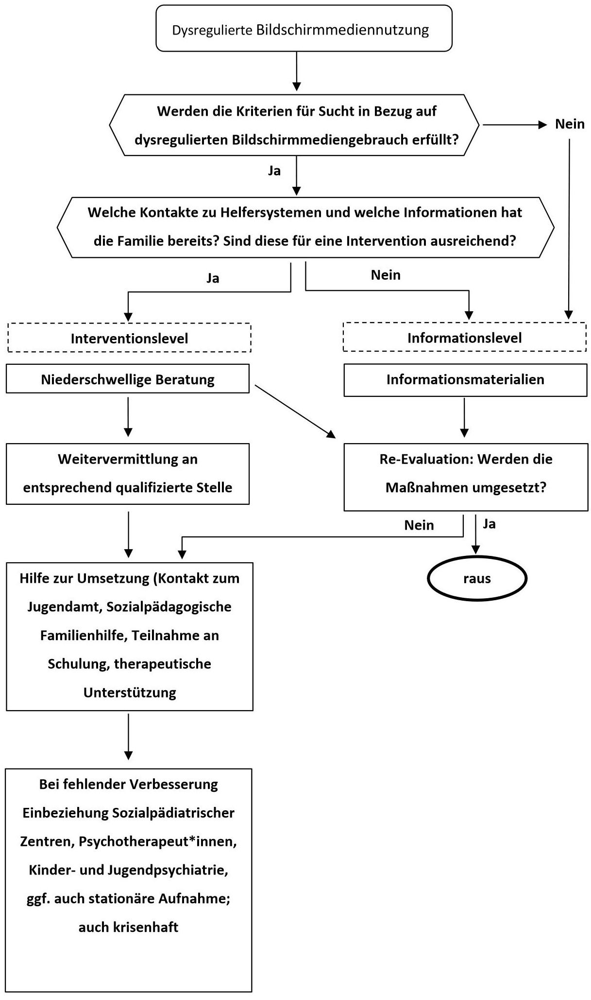

Empfehlungen der Medienleitlinie
Die folgenden Empfehlungen sind entnommen aus:
Deutsche Gesellschaft für Kinder- und Jugendmedizin e.V. DGKJ. SK2-Leitlinie: Leitlinie zur Prävention dysregulierten Bildschirmmediengebrauchs in der Kindheit und Jugend. 1. Auflage 2023. AWMF-Register Nr. 027-075. Verfügbar: https://register.awmf.org/de/leitlinien/detail/027-075, Zugriff am 02.09.2023
Die wichtigsten Empfehlungen auf einen Blick
Für Kinder und Jugendliche gilt im Allgemeinen: Je weniger Bildschirmzeit, desto besser.
Eltern sollen informiert und unterstützt werden,…
… Kinder unter 3 Jahren von jeglicher passiven und aktiven Nutzung von Bildschirmmedien fernzuhalten.
… falls sie ihre Kinder im Alter von 3 bis 6 Jahren an die Nutzung von Bildschirmmedien heranführen möchten, dies höchstens 30 Minuten an einzelnen Tagen zu gestatten, und nicht ohne Anwesenheit der Eltern.
… Kindern im Alter von 6 bis 9 Jahren die freizeitliche Nutzung von Bildschirmmedien höchstens 30 bis 45 Minuten an einzelnen Tagen zu gestatten.
… Kindern unter 9 Jahren keine eigene Spielkonsole zugänglich zu machen.
… Bildschirmmedien nicht zur Belohnung, Bestrafung oder Beruhigung einzusetzen.
… während des Essens, insbesondere der gemeinsamen Mahlzeiten, keine Bildschirmmedien zu nutzen und bei der Nutzung von Bildschirmmedien nicht zu essen.
… sich für die digitalen Aktivitäten ihrer Kinder zu interessieren und diese kritisch zu begleiten.
… die Gefahr einer problematischen Nutzung von Onlinemedien zu beachten (einschließlich evtl. Suchtentwicklung), die Bildschirmnutzung Heranwachsender regelmäßig, gegebenenfalls gemeinsam, zu reflektieren sowie im Zweifel anerkannte Tests zu nutzen und im Bedarfsfall professionelle Hilfe zu suchen.
Eltern und Geschwister sollen informiert und unterstützt werden,…
… sich ihrer eigenen Vorbildfunktion für die aktive und passive Bildschirmnutzung bewusst zu sein.
… in Gegenwart von jüngeren Familienmitgliedern auf die Nutzung von Bildschirmmedien zu verzichten.
Eltern und Lehrer*innen sollen informiert und unterstützt werden, auf digitalen Fernunterricht wann immer möglich zu verzichten.
Allgemeine Empfehlungen (siehe auch altersspezifische Empfehlungen)
| Eltern sollen informiert und unterstützt werden, … | |
|---|---|
| 1. | … dass ihre Kinder leitliniengemäß, altersabhängig ausreichend körperliche Freizeitaktivitäten ausüben. |
| 2. | … medienfreie Zeiträume zu schaffen, in denen die Familie gemeinsame Aktivitäten unternimmt. |
| 3. | ... während des Essens, insbesondere der gemeinsamen Mahlzeiten, keine Bildschirmmedien zu nutzen und bei der Nutzung von Bildschirmmedien nicht zu essen. |
| 4. | ... dass sich während des Schlafens keine mobilen Bildschirmmedien im Zimmer befinden, möglichst auch keine stationären Bildschirmmedien, wie TV-Geräte oder Computer. |
| 5. | … dass ihre Kinder keine Bildschirmmedien in der letzten Stunde vor dem Schlafengehen nutzen. |
| 6. | … dass ihre Kinder einen adäquaten, von aktiver wie passiver Mediennutzung ungestörten Schlaf (je nach Alter des Kindes) bekommen. |
| 7. | … die Zeiten morgens vor Schule und Kindergarten möglichst ohne Bildschirmmedien zu gestalten. |
| 8. | … Bildschirmmedien nicht zur Belohnung, Bestrafung oder Beruhigung einzusetzen. |
| 9. | ... ihre Kinder hinsichtlich einer vielfältigen Kommunikation, auch ohne elektronische Geräte, zu unterstützen und anzuleiten (persönliche Konversation, Telefonate, Briefe etc.). |
| 10. | ... klare Regeln bezüglich der Nutzungsdauer von Bildschirmmedien gemeinsam schriftlich zu vereinbaren und gemeinsam umzusetzen. Bewusste Ausnahmen kann es geben, diese sollten ebenfalls schriftlich festgehalten werden. |
| 11. | … die Bildschirmzeit verschieden alter Kinder in derselben Familie entsprechend unterschiedlich zu gestalten. |
| 12. | … vor der Einführung mobiler Geräte mit Internetfähigkeit einen „Handynutzungsvertrag” unter Einbeziehung der Kinder zu vereinbaren, unter Berücksichtigung der haftungsrechtlichen Situation, soweit die Eltern die Besitzer des Gerätes sind und es dem Kind zur Nutzung überlassen. |
| 13. | … Internet-Zugangssicherungen zu kennen und diese einzusetzen, um Kinder vor altersunangemessenen Inhalten sowie übermäßigem Konsum zu schützen. |
| 14. | … dass Ablenkungen während der Hausaufgaben durch Bildschirmmedien vermieden und diese nur zweckgebunden eingesetzt werden. |
| 15. | … sich an Altersempfehlungen von Medien zu orientieren und diese nicht zu unterschreiten. Hierbei ist das Entwicklungsalter zu berücksichtigen und im Zweifelsfall ein höheres Einstiegsalter zu wählen. |
| 16. | … die Gefahr einer problematische Nutzung von Onlinemedien zu beachten (einschließlich evtl. Suchtentwicklung), die Bildschirmnutzung Heranwachsender regelmäßig, gegebenenfalls gemeinsam, zu reflektieren sowie im Zweifel anerkannte Selbsttests zu nutzen und im Bedarfsfall professionelle Hilfe zu suchen. |
| 17. | … beim Bewegtbildkonsum werbefreien Angeboten den Vorzug zu geben und während etwaiger Werbepausen den Ton oder den gesamten Bildschirm auszustellen. |
| 18. | … eigenständig für angemessene sexuelle Aufklärung ihrer Kinder zu sorgen, bevor diese durch Mediennutzung mit sexuellen Inhalten konfrontiert werden. |
| 19. | … mit anderen Bezugspersonen der Kinder neben den Eltern, die bestehenden Regeln bezüglich der Nutzung von Bildschirmmedien abzustimmen und zu besprechen, damit diese konsistent eingehalten werden können. |
| 20. | ... ein Netzwerk von Vertrauenspersonen aufzubauen, die für sich und ihre Kinder als Anlaufstelle bei Schwierigkeiten dienen können. |
| 21. | ... das Thema der Bildschirmmedien auch in Bildungseinrichtungen, z. B. als Themenschwerpunkt für Elternabende anzusprechen, um eine konzertierte Aufklärung/Prävention mit den Bildungseinrichtungen und innerhalb der jeweiligen Klassengemeinschaften umzusetzen. |
| 22. | … sich für die digitalen Aktivitäten ihrer Kinder zu interessieren und diese kritisch zu begleiten. |
| 23. | … Bildschirmmedien bei Nichtbenutzung wegzuräumen, ggf. an einem unzugänglichen und nicht sichtbaren Ort aufzubewahren („Aus den Augen – aus dem Sinn!“). |
| 24. | … möglichst auf Fernbedienungen und Sprachsteuerungen zu verzichten und diese ihren Kindern unzugänglich zu machen. |
Altersspezifische Empfehlungen
Mit dem Älterwerden des Kindes ist der Übergang von einer direktiven hin zu einer dialogischen Umsetzung der folgenden Empfehlungen angebracht. In Einzelfällen müssen in Hinblick auf die vorgeschlagene Nutzungszeit von Bildschirmmedien individuelle Maßstäbe angelegt werden. Dies gilt insbesondere für eine Nutzung, die kreativen, edukativen und selbstentwicklungsrelevanten Zwecken dient.
| Eltern sollen informiert und unterstützt werden, … | |
|---|---|
| 0 bis 3 Jahre | |
| 25. | … Kinder unter 3 Jahren von jeglicher passiven und aktiven Nutzung von Bildschirmmedien fernzuhalten. |
| 3 bis 6 Jahre | |
| 26. | ... falls sie ihre Kinder im Alter von 3 bis 6 Jahren an die Nutzung von Bildschirmmedien heranführen möchten, dies höchstens 30 Minuten an einzelnen Tagen zu gestatten, und nicht ohne Anwesenheit der Eltern. Dabei sollen sie auf qualitativ hochwertige Inhalte achten und die Inhalte besprechen. Die Altersempfehlungen sollen eingehalten und Inhalte im Vorfeld auf die Eignung für das eigene Kind hin geprüft werden. |
| 6 bis 9 Jahre | |
| 27. | ... Kindern im Alter von 6 bis 9 Jahren die freizeitliche Nutzung von Bildschirmmedien höchstens 30 bis 45 Minuten an einzelnen Tagen zu gestatten. Dabei sollen sie qualitativ hochwertige Inhalte, wann möglich immer gemeinsam mit ihren Kindern nutzen, und diese im Nachhinein besprechen. Die Altersempfehlungen sollen eingehalten und Inhalte im Vorfeld auf die Eignung für das eigene Kind hin geprüft werden. |
| 28. | … Kindern unter 9 Jahren keinen freien Internetzugang zu gewähren, auch nicht beaufsichtigt. |
| 29. | ... Kindern unter 9 Jahren keine eigene Spielkonsole zugänglich zu machen. |
| 9 bis 12 Jahre | |
| 30. | ... Kindern im Alter von 9 bis 12 Jahren die freizeitliche Nutzung von Bildschirmmedien höchstens 45 bis 60 Minuten täglich zu gestatten. Dabei sollen sie qualitativ hochwertige Inhalte, wann möglich immer gemeinsam mit ihren Kindern nutzen, und diese im Nachhinein besprechen. Die Altersempfehlungen sollen eingehalten und Inhalte im Vorfeld auf die Eignung für das eigene Kind hin geprüft werden. |
| 31. | ... Kinder frühestens ab 9 Jahren, besser frühestens ab 12 Jahren, ein eigenes Smartphone mit eingeschränktem Internetzugang zu überlassen. |
| 32. | ... Kindern im Alter von 9 bis 12 Jahren nur beaufsichtigten Internetzugang zu gewähren. |
| 12 bis 16 Jahre | |
| 33. | ... Jugendlichen im Alter von 12 bis 16 Jahren die freizeitliche Nutzung von Bildschirmmedien von maximal 1-2 Stunden am Tag und bis spätestens 21 Uhr zu ermöglichen. Die Altersempfehlungen sollen beachtet und Inhalte zudem im Vorfeld auf die Eignung für das eigene Kind hin geprüft werden. Heranwachsende sollen weiterhin inhaltlich begleitet werden. |
| 34. | ... regelmäßig mit den Jugendlichen Gespräche führen, um die Medienzeit und Inhalte, auch im Verhältnis zu den eigenen Lebenszielen, zu reflektieren. Jugendliche sollen dazu angeregt werden, selber zu beobachten, wie sich Medienkonsum auf Konzentration, Sozialverhalten, Fitness, Persönlichkeit, Schulnoten etc. auswirken. |
| 35. | ... Jugendlichen im Alter von 12 bis 16 Jahren nur beschränkten Internetzugang zu gewähren. |
| 36. | … im Falle einer übermäßigen Internetnutzung anerkannte Selbsttests zu nutzen und im Bedarfsfall professionelle Hilfe zu suchen. |
| 16 bis 18 Jahre | |
| 37. | ... je nach Reifegrad die freizeitliche Nutzung von Bildschirmmedien durch Regeln festzulegen (z.B. an einem Abend vor einer Klausur); ein Orientierungswert kann 2 Stunden am Tag betragen. Die Altersempfehlungen sollen beachtet werden. Eltern sollen begleitend zur Seite stehen und regelmäßig Gespräche zur Reflektion führen. |
| 38. | … Jugendlichen ab 16 Jahren den uneingeschränkten Internetzugang zu ermöglichen. Die Erfahrung zeigt, dass auch 16 bis 18-jährige es sehr schwer haben können, Bildschirmmedienkonsum auf ein gesundes Maß zu begrenzen. Viele von ihnen bedürfen immer noch einer intensiven Begleitung. |
| 39. | … im Falle einer übermäßigen Internetnutzung gemeinsam mit dem Jugendlichen einen anerkannten medienbezogenen Selbsttest durchzuführen und sich möglichst frühzeitig professionelle Hilfe zu suchen. |
Empfehlungen für den digitalen Fernunterricht
| Eltern und Lehrer*innen sollen informiert und unterstützt werden, … | |
|---|---|
| 40. | … auf digitalen Fernunterricht wann immer möglich zu verzichten. In der Grundschule (Primarstufe) soll digitaler Fernunterricht auf ein Minimum reduziert werden. Stattdessen soll auf analoge Materialien mit Lernaufgaben für Eltern und Kinder zurückgegriffen werden, die in beide Richtungen auf dem Postweg oder in digitalisierter Form (z. B. Ausdrucken/Einscannen) versendet werden. In der weiterführenden Schule (Sekundarstufe I+II) ist digitaler Fernunterricht im geringen Umfang möglich, dabei sollen die Schüler mehrheitlich analoge Medien zur Aufgabenbewältigung einsetzen. |
| 41. | … die Stundenpläne des Präsenzunterrichts nicht 1: 1 auf digitalen Unterricht zu übertragen. In der Grundschule (Primarstufe) soll digitaler Fernunterricht eine Bildschirmzeit von 60 Minuten am Tag nicht überschreiten. In der weiterführenden Schule (Sekundarstufe I+II) soll digitaler Fernunterricht eine Bildschirmzeit von 120 Minuten am Tag nicht überschreiten. |
| 42. | … ein salutogenetisches Unterrichtskonzept zu erstellen, incl. Bewegungsausgleich, Augenhygiene, Umgang mit Natur, Kunst sowie Soziales. Kinder sollen viele Anregungen für bildschirmfreie Arbeiten erhalten. Pausen sind in digitalem Fernunterricht regelmäßig und vermehrt einzuhalten. |
| 43. | … die Kinder außerhalb von digitalem Unterricht zu bildschirmfreien Eigenaktivitäten anzuregen. |
| 44. | …sicherzustellen, dass auch Geräte, die von Schulen für den digitalen Fernunterricht zur Verfügung gestellt werden, eine Zeitbegrenzung und Filtersoftware beinhalten, damit diese nicht über die Unterrichtszeit hinaus und nicht für entwicklungs-beeinträchtigende Inhalte verwendet werden können. |
| 45. | … falls digitaler Fernunterricht erwogen oder z. B. aus pandemischen Gründen notwendig ist, sollen alle Möglichkeiten des Unterrichtes oder der Förderung in Präsenz genutzt werden. |
| 46. | … sich der Gefahr von problematischer Mediennutzung bei den Schüler*innen bewusst zu sein und geeignete Maßnahmen einzuleiten. |
Empfehlungen in Pandemiezeiten
| Eltern und Lehrer*innen sollen informiert und unterstützt werden, … | |
|---|---|
| 47. | ... in Pandemiezeiten vorrübergehende Sonderregelungen für die Nutzung von Bildschirmmedien für die Familie zu erstellen. |
| 48. | ... während der Pandemie vermehrt Aktivitäten in der Natur, im sozialen Nahraum und im kreativen Bereich zu ermöglichen. |
| 49. | … in und nach Pandemiezeiten gesundheitsfördernde, ressourcen- und resilienzfördernde Präventionsprogramme mit ihren Kindern/Schülern gemeinsam durchführen, bzw. die Inhalte zu vermitteln. |
| 50. | … am Ende von Pandemiezeiten die Nutzung von Bildschirmmedien auf das vorpandemische Niveau zu reduzieren und bewusst medienfreie Zeiträume zu etablieren. |
Empfehlungen für Eltern und Geschwister als Vorbilder
| Eltern und Geschwister sollen informiert und unterstützt werden, … | |
|---|---|
| 51. | ... regelmäßig ihr eigenes Nutzungsverhalten zu reflektieren und ggf. anzupassen. |
| 52. | … sich ihrer eigenen Vorbildfunktion für die aktive und passive Bildschirmnutzung bewusst zu sein. |
| 53. | … in Gegenwart von jüngeren Familienmitgliedern auf die Nutzung Bildschirmmedien zu verzichten. |
| 54. | … in Situationen, in denen in Gegenwart von Kindern und Jugendlichen die Nutzung von Bildschirmmedien (z. B. berufsbedingt) in der Freizeit nicht vermeidbar ist, zuvor für alternative Beschäftigungsmöglichkeiten zu sorgen. Den Kindern soll die Notwendigkeit der Nutzung von Bildschirmmedien erklärt werden. |
| 55. | … im Falle einer übermäßigeren Internetnutzung einen anerkannten medienbezogenen Selbsttest durchzuführen und sich ggf. professionelle Hilfe zu suchen. |
Vorgehen im Falle dysregulierter Bildschirmmediennutzung
Abhängig von der Schwere der Dysregulation sowie des Alters des/der Betroffenen muss individuell und fallbezogen von dem Therapeuten, der primär angesprochen wird, entschieden werden, welche Hilfsangebote die Familie braucht. Bei vielen Familien besteht basaler Beratungsbedarf und ein Mangel an richtigen Informationen (z. B. darüber, dass übermäßiger Medienkonsum ungünstig für die Entwicklung von Kindern ist). Initial, und damit auf einem „Informationslevel”, kann die jeweilig angesprochene Person/Stelle zunächst mit entsprechenden Infomaterialien und im Beratungsgespräch eventuelle Wissenslücken schließen, Fragen beantworten, motivieren. Sind ausreichend Informationen vorhanden und geht es um die gescheiterte Umsetzung derselben, ist ein „Interventionslevel” erreicht.
Zunächst müssen die Gründe verstanden werden, die dazu führen, dass „wider besseres Wissens gehandelt wird”. Je nachdem, wie diese Gründe sich darstellen, ergibt sich die Auswahl der dann auch fachkompetenten Hilfe. Die eine Familie wird eine sozialpädagogische Fachkraft brauchen, um zuhause die Umsetzung von Regeln zu ermöglichen, in der anderen Familie mag eine größere psychosoziale Problematik der Anlass sein, dass die Eltern oder z. B. das alleinerziehende Elternteil erschöpft und daher nicht mehr in der Lage sind, konsequent zu handeln. Und in anderen Fällen können Störungen der Impulskontrolle oder ADHS die Ursache sein und eine entsprechende Therapie notwendig werden.
Psychoedukation, Verhaltenstherapie und ggf. medikamentöse Therapie müssen durch Fachleute in Spezialambulanzen, Beratungszentren oder spezialisierten Praxen (Ärzt*innen, Psychotherapeut*innen, Sozialtherapeuten, Pädagogen etc.) initiiert und oftmals auf längere Zeit begleitet werden. In den seltensten Fällen reicht hier ein einmaliges kurzes Beratungsgespräch aus. Die Problematik ist häufig mehrdimensional, besteht bevor Beratung gewünscht wird, über mehrere Jahre, und der dysregulierte oder gar suchthafte Medienkonsum ist nur ein sichtbares Zeichen einer weit größeren Problematik.
Zur Definition „suchthafter Gebrauch” sind hier die Kriterien der „Internet Gaming Disorders” in adaptierter Weise zu gebrauchen und auf das Medienverhalten anzuwenden: Das revidierte DSM-5 (Diagnostisches und Statistisches Manual Psychischer Störungen, fünfte Auflage), das von der American Psychiatric Association herausgegeben wird, beinhaltet „Internet Gaming Disorder” als Forschungsdiagnose. Dazu müssen fünf der folgenden Kriterien über 12 Monate erfüllt sein:
andauernde Beschäftigung mit Internet- bzw. Online-Spielen
Entzugssymptome, wenn das Online-Spielen nicht zur Verfügung steht
Toleranzentwicklung mit dem Bedürfnis, zunehmend Zeit für Online-Spiele aufzubringen
erfolglose Versuche, die Teilnahme am Online-Spielen zu beenden
Verlust des Interesses an früheren Hobbies oder Aktivitäten als Folge des Online-Spielens
Andauerndes, exzessives Online-Spielen trotz des Wissens um die psychosozialen Probleme
Täuschen von Familienmitgliedern, Therapeuten oder anderen Personen in Bezug auf das wirkliche Ausmaß des Online-Spielens
Gebrauch der Online-Spiele, um aus negativen Emotionen (wie z. B. Gefühlen von Hilflosigkeit, Schuld oder Ängstlichkeit) herauszukommen oder um diese zu lindern
Gefährdung oder Verlust von wichtigen Bekanntschaften, Beruf, Ausbildung oder Karriere-Möglichkeiten wegen des Online-Spielens
Bei Jugendlichen ist das unmittelbar anwendbar, für kleinere Kinder ist es etwa so zu adaptieren:
Beschäftigung mit Medien für eine erhebliche Zeit am Tag (ein Vielfaches der empfohlenen Zeit)
Entzugssymptome bei Medienverbot
Schwierigkeiten beim Beenden
Fixierung auf Medien
Mangelnde andere, altersadäquate Beschäftigungen sowie Beziehungen zu Gleichaltrigen
Medien einzige oder häufige Alternative, um negative Emotionen zu beenden
Verhaltenstherapie mit Förderung der Familienunterstützung und Elterntrainings sind wirksame, aber auch aufwendige notwendige Maßnahmen, in Einzelsituationen sind auch andere Therapien zu erwägen. Zu beachten ist, dass das Kind/der/die Jugendliche zwar meist selbst betroffen ist, aber nicht alleine therapiert werden kann. Das Medienverhalten der ganzen Familie muss erfasst und meist auch bei allen verändert werden, damit bei dem Kind/Jugendlichen überhaupt eine grundlegende Änderung möglich ist (siehe Elternempfehlungen).
Oftmals ist ein strukturierter Tagesplan mit klar festgelegten und altersgerecht angepassten Zeiten der erste Schritt. Klare Zeiten der Mediennutzung müssen ritualisiert, erlernt und konsequent umgesetzt werden. Für die Nicht-Nutzungszeiten wird empfohlen, die Geräte aus der Reichweite der Kinder zu nehmen (Verwahrung im „Handybett”; Wegschließen der Geräte, etc.). Auf Vermeidung des „passiven Medienkonsums”, also des Mitschauens bei Eltern oder älteren Geschwistern, auch im Rahmen des Unterrichtes ist zu achten. Häufig benötigen die Familien Anleitung, Unterstützung und Begleitung, um alternative Spielangebote machen zu können.
In einzelnen Fällen mit krisenhafter Zuspitzung, insbesondere bei suchthaftem Gebrauch sind auch stationäre Aufenthalte notwendig. Vor „radikalen Entzugskuren” bei bestehendem suchthaftem Konsum ohne therapeutische Begleitung im ambulanten Setting ist zu warnen, da die sich ergebende Destabilisierung oft ambulant nicht abgefangen werden kann. Das Handlungsschema in Abbildung 1 soll bei dieser Beurteilung helfen.

| Empfehlungen zum Vorgehen im Falle dysregulierter Bildschirmmediennutzung | |
|---|---|
| 56. | Als Basis soll die jeweilig beratende Person/Familie/Stelle zunächst mit entsprechenden Informationsmaterialien ausgestattet werden. Im anschließenden Beratungsgespräch sollen Wissenslücken geschlossen, Fragen beantwortet und motiviert werden. |
| 57. | Sind ausreichend Informationen vorhanden und geht es um die gescheiterte Umsetzung derselben, sollen Psychoedukation, Verhaltenstherapie und ggf. medikamentöse Therapie durch Fachleute initiiert und auf längere Zeit begleitet werden. |
| 58. | Das Medienverhalten der ganzen Familie soll erfasst und bei allen ggf. verändert werden, damit bei den Kindern/Jugendlichen eine grundlegende Änderung möglich ist. |
| 59. | In einzelnen Fällen bei suchthaftem Mediengebrauch mit krisenhafter Zuspitzung soll ein stationärer Aufenthalt indiziert werden. |